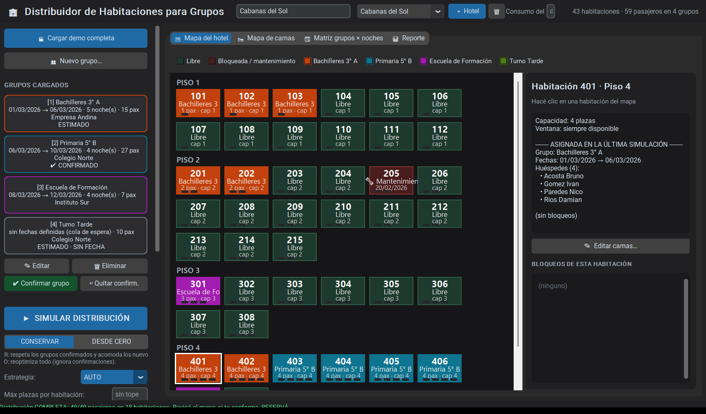
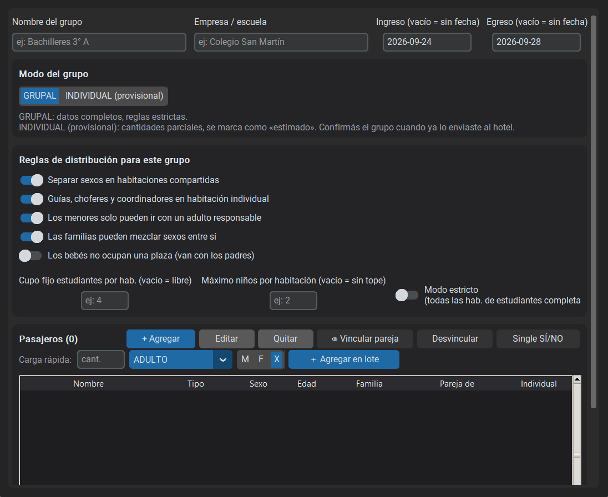
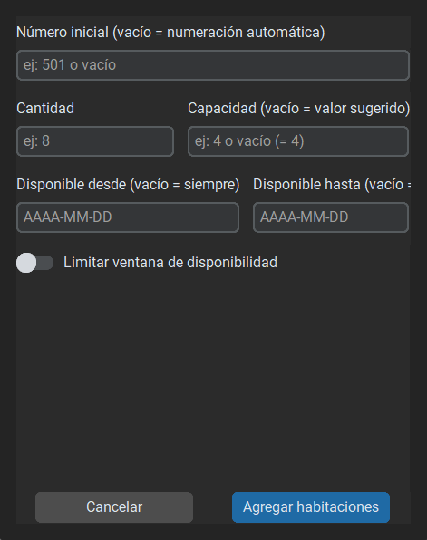
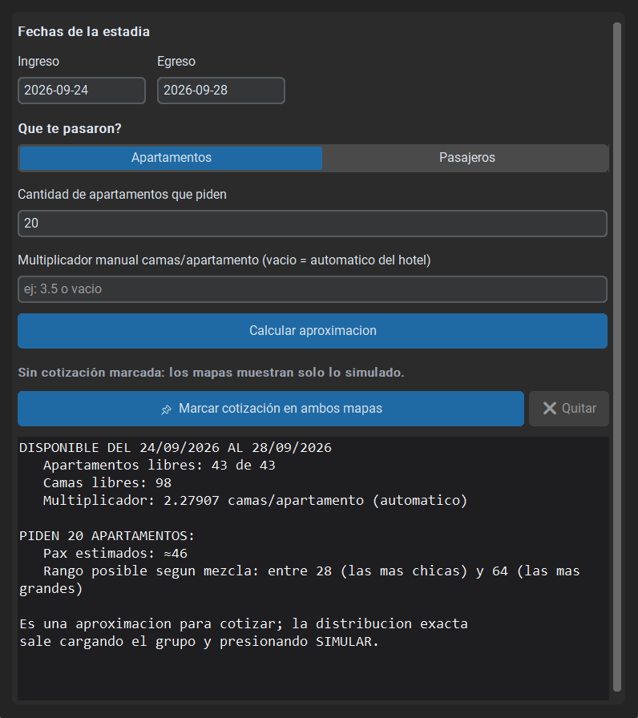
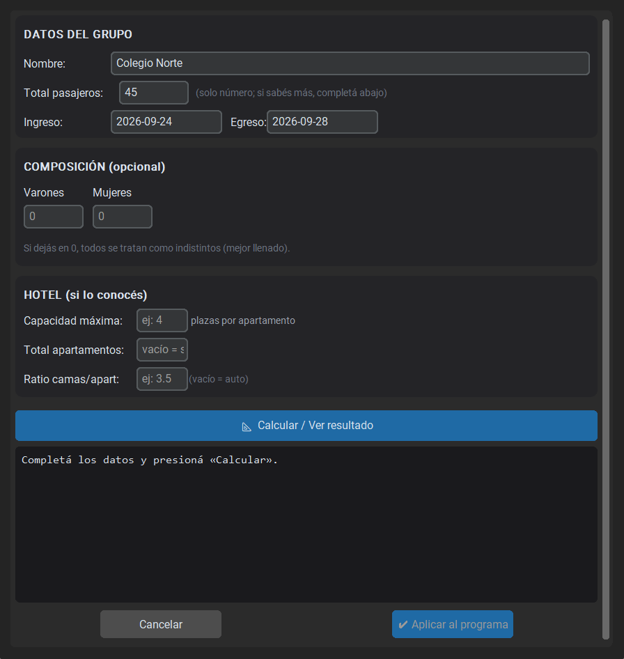
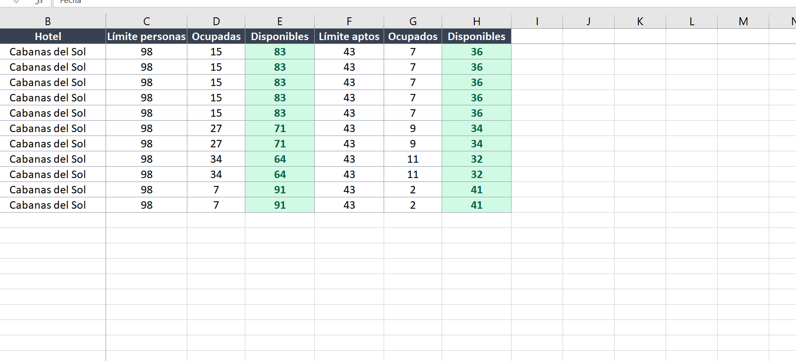
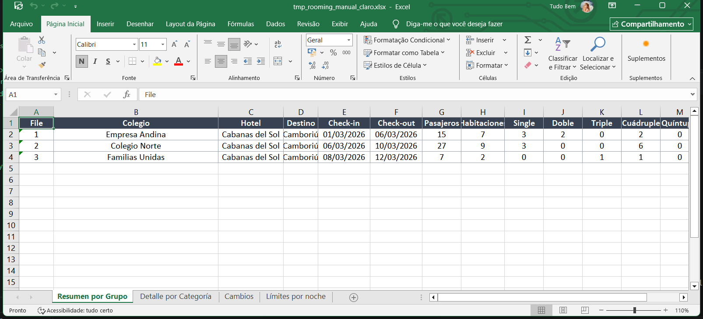

¿Qué hace esta aplicación?
Recibís grupos (colegios, empresas, turismo estudiantil) que van a un hotel con una cierta cantidad de apartamentos (habitaciones con 2, 3, 4… camas) o camas sueltas. La app asigna cada pasajero a una cama respetando las reglas que definas:
- Separar hombres y mujeres si lo pedís.
- Que los menores vayan con un adulto responsable.
- Que las familias puedan mezclarse entre sí.
- Que las parejas compartan cama matrimonial.
- Un cupo fijo de estudiantes por habitación (por ej. 2 o 4 por apartamento).
- Guias/choferes en individual, si lo indicás.
- Tope de plazas por habitación, disponibilidad por fechas y bloqueos.
El resultado se muestra en un mapa de habitaciones y una matriz de consumo por noche, y se puede exportar a Excel con un rooming profesional que incluye el límite diario de personas y alerta de sobreventa.
Primeros pasos
Al abrir la aplicación verás una ventana con tres zonas:
- Barra superior: hotel activo, selector de hoteles y rango de fechas de vista.
- Panel lateral: botones de acción (cargar demo, grupos, habitaciones, exportar…).
- Zona central: mapa del hotel, mapa de camas y matriz de consumo.

Hoteles (trabajar con varios)
La app permite manejar varios hoteles a la vez, cada uno con sus propios grupos y habitaciones:
- Hacé click en «＋ Hotel» en la barra superior para agregar un hotel.
- Cambiá el nombre del hotel activo editando el campo de texto de la barra (Enter o clic afuera).
- Usá el selector desplegable para cambiar de hotel; cada hotel recuerda sus grupos y resultados.
- Con el botón «🗑» eliminás el hotel activo (con confirmación).
Grupos de pasajeros
Un grupo es una entidad (colegio, empresa) con fechas de ingreso/egreso y una lista de pasajeros. Los grupos aparecen como tarjetas en el panel lateral con su empresa y un sello de estado (ESTIMADO, ✔ CONFIRMADO o SIN FECHA).
- Click en «👥 Nuevo grupo…».
- Completá el nombre y la empresa / escuela (ej: "Colegio Norte").
- Indicá ingreso/egreso. Dejando ambas fechas vacías lo guardás como cola de espera (sin fecha): no se distribuye hasta que definas fechas.
- Elegí el modo del grupo: GRUPAL (datos completos, reglas estrictas) o INDIVIDUAL (provisional) (cantidades parciales; se marca «ESTIMADO» hasta que confirmes el grupo).
- Definí las reglas de distribución para ese grupo (separar sexos, niños con adultos, guías en individual, cupo de estudiantes por hab., etc.).
- Agregá pasajeros con «＋ Agregar», o usá «Agregar en lote» para crear varios iguales (ej: 25 estudiantes mujeres).
- Presioná «Guardar grupo».

Modo de hospedaje (estudiantes o adultos)
El modo de hospedaje se elige por grupo, así que en el mismo hotel podés tener un grupo adulto de una empresa y varios grupos escolares al mismo tiempo. Solo cambia la forma de repartir las habitaciones; el resto de las reglas sigue igual.
| Modo | Cuándo usarlo | Qué hace |
|---|---|---|
| ADULTOS (receptivo) | Grupos de adultos, familias, parejas, empresas. | El reparto anterior: agrupa lo más parecido, prioriza parejas y familias, y reparte libre entre todos los demás. |
| ESTUDIANTIL | Viajes de estudio, colegios, convenciones de alumnos. | Separa en dos: alumnos (que se mezclan entre sí) y acompañantes (apoderados, choferes, guías, que nunca duermen con un alumno). Cada bando se reparte aparte. |
Dentro del modo ESTUDIANTIL hay dos ajustes que afinan el reparto:
| Ajuste | Predeterminado | Qué hace |
|---|---|---|
| Máx. de plazas por hab. de alumnos | 4 | Aunque el hotel tenga habitaciones de 6, 8 o 10, los alumnos se ubican solo en las que tengan hasta este número de plazas. Evita sextuples y octupletes. Si el hotel no tiene ninguna habitación chica, se usa igual la más chica y aparece un aviso. |
| Agrupar acompañantes por rol | Activado | Con el botón apagado, todos los acompañantes del mismo sexo pueden ir juntos aunque sean de roles distintos (por ejemplo, choferes y guías). Con el botón encendido, cada rol se agrupa aparte: choferes con choferes, apoderadas con apoderadas. |
En la pestaña de Reglas de cada grupo también siguen disponibles «Necesita single» y «Guías/choferes en individual». Si activás esa última, cada chofer o guía duerme solo; si la dejás apagada, se agrupan entre sí por rol (lo más común).
Datos de cada pasajero
| Campo | Qué significa |
|---|---|
| Nombre y apellido | Se muestra en el mapa y en los Excel. |
| Tipo | Estudiante, Adulto, Niño, Bebé, Guía/Chofer. Influye en las reglas. |
| Sexo | Usado al separar sexos en habitaciones compartidas. |
| Edad | Opcional; define si es menor (niño/adolescente). |
| Familia | Apellido de grupo; los de la misma familia pueden mezclarse si activás la regla. |
| Pareja de | Comparten cama matrimonial (hab. con 1 cama para 2). |
| Necesita single | Habitación individual obligatoria (típico de guías/choferes). |
Habitaciones y camas
Un hotel puede tener apartamentos (habitaciones con número, piso y capacidad) y/o un inventario de camas sueltas (ej. un dormitorio común).
Agregar apartamentos

- Click en «🛏 Agregar habitaciones…».
- Número inicial (vacío = numeración automática 101, 102…), cantidad y capacidad.
- Opcional: una ventana de disponibilidad (por ej. reducidas del 5 al 8 de marzo).
- Con el botón 📌 que aparece junto a cada habitación en el mapa se abre la edición y los bloqueos por fechas (mantenimiento, reserva aparte…).
Cargar camas sueltas
Con «🛏 Cargar camas…» creás lotes de camas con nombre, cantidad y disponibilidad por fechas. Cuando el hotel no tiene apartamentos (solo camas), la simulación usa el modo solo camas.
Simular la distribución
- En el panel lateral elegí la estrategia (normalmente
AUTOes ideal). - Opcional: definí un máximo de plazas por habitación (tope).
- Presioná «▶ SIMULAR DISTRIBUCIÓN».
El estado final aparece en la barra de estado: cuántos pasajeros alojados, cuántas habitaciones usadas, personas sin habitación, etc.
Confirmar grupos y modo de simulación
Cuando trabajás con cuotas que llegan de a poco, conviene ir congelando lo que ya está cerrado para que el motor no lo reacomode al sumar grupos nuevos.
- Seleccioná un grupo en el panel lateral (tarjeta).
- Presioná «✔ Confirmar grupo»: sus habitaciones quedan congeladas en las próximas simulaciones y el grupo se marca ✔ CONFIRMADO.
- Con «↩ Quitar confirm.» volvés a dejar que se redistribuya libremente. Los grupos SIN FECHA no se pueden confirmar hasta tener fechas.
Debajo del botón de simular elegís el modo de simulación:
| Modo | Qué hace |
|---|---|
CONSERVAR | Respeta los grupos confirmados (no los mueve) y acomoda los nuevos/provisionales en lo que queda libre. |
DESDE CERO | Reoptimiza todo de nuevo, ignorando confirmaciones (útil para ver la distribución óptima global). |
Interpretar los resultados
- Mapa del hotel: cada habitación con sus camas y el nombre del pax asignado. Click en una habitación para ver el detalle y las fechas de cada ocupante.
- Mapa de camas: vista alternativa cuando se usan camas sueltas.
- Matriz de consumo: grupos en filas y fechas en columnas, con el total por noche, el pico y el tope de plazas.
- Rango de fechas de vista (barra superior): recortá la matriz a un período; se guarda con el espacio de trabajo.
Rack / Cotizador rápido

- Indicá las fechas de ingreso/egreso y si te pasaron apartamentos o pasajeros.
- Escribí la cantidad (ej: 20 apartamentos o 80 pasajeros).
- Usá el multiplicador automático del hotel o uno manual (ej: 3.5 camas por apartamento).
- «Calcular aproximación» te da el estimado.
- «📌 Marcar cotización en ambos mapas» dibuja encima del mapa la zona que necesitarías.
Planificador / Estimador

- Completá nombre y total de pasajeros del grupo futuro.
- Si sabés composición (estudiantes, adultos, etc.), completá la tabla.
- Indicá la capacidad máxima deseada por habitación.
- Presioná «Estimar» para ver cuántas habitaciones de cada capacidad necesitás.
- Podés aplicar la sugerencia: crea el grupo y hasta agrega las habitaciones al hotel.
Exportar a Excel
Hay dos exportaciones principales en el panel lateral:
📤 Exportar Excel…
Guarda un archivo con las hojas Mapa del hotel, Resumen y
Pasajeros (una fila por pasajero con su habitación y fechas). Tiene firma:
*.xlsx o dos CSV (*.csv).
📋 Exportar Rooming…
Genera un Excel por cada hotel con grupos cargados en la carpeta que elijas
(por defecto exportaciones\, junto a la app). Cada archivo contiene:
- Resumen por Grupo: una fila por grupo, con estado, fechas, total, sin habitación y conteos al estilo "File".
- Detalle por Categoría: pasajeros desglosados por categoría (Estudiantes H/M, Adultos H/M, Niños, Guías) y tipo de habitación.
- Cambios: movimientos respecto a la última exportación.
- Límites por noche: por cada fecha, el límite de personas (y de apartamentos), lo ocupado y lo disponible.


Guardar y reabrir tu trabajo
- 💾 Guardar JSON… y 📂 Abrir JSON…: guardan/abren todos
los hoteles y grupos en un archivo
.jsonpara compartir o respaldar. - Auto-guardado: la app guarda su espacio de trabajo
(
exportaciones\espacio_trabajo.json) automáticamente al hacer cambios, y lo restaura al abrir: hoteles, grupos, hotel activo y rango de fechas de vista.
Consejos y trucos
- Probá la demo completa antes de cargar datos reales: muestra todo en 5 segundos.
- Si un grupo no entra, revisá primero fechas, luego bloqueos y después capacidad. La app siempre muestra cuántos quedaron afuera.
- Usá el tope de plazas para no meter de más en apartamentos grandes.
- En estrategia
EXACTAel resultado es óptimo pero tarda más con muchos pasajeros. - La matriz te muestra el pico de consumo: es tu número clave para saber si un hotel te sirve para una fecha específica.